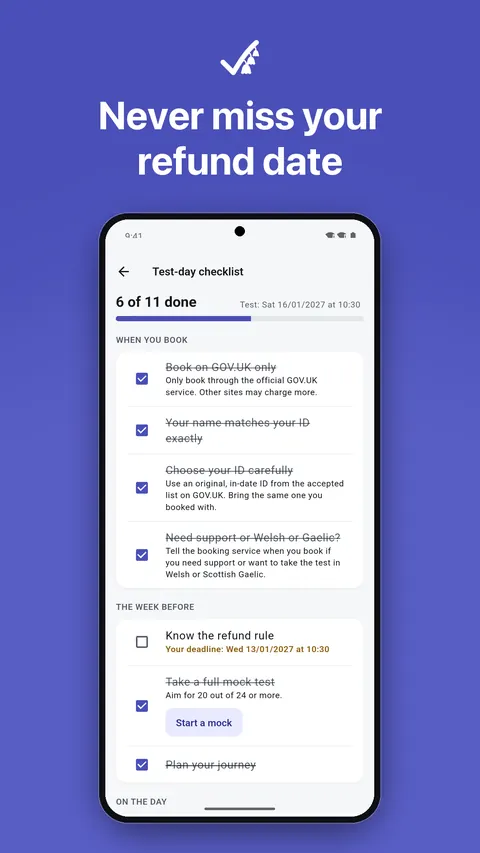

Not a government app. Bluebell is an independent study app made by Kodfu Bilisim. It does not represent the Home Office, UK Visas and Immigration or any government body, and it is not affiliated with or endorsed by them or by TSO.
Free and Pro
The free version is meant to be genuinely useful, so you can judge the questions before you pay anything.
Free
£0
- Chapter 1 in full
- Six questions in every other topic: 139 questions free in all
- Two full mock tests
- All the tools: test date countdown, free cancellation deadline, test-day checklist, absence counter and Handbook vs today
Bluebell Pro
£6.99 once
- All 942 questions
- Every mock test
- Every study note
- No subscription
Android now; iPhone version not yet available.
What's in the app

Mock tests like the real one
Full mock tests of 24 questions in 45 minutes with the 18 out of 24 pass mark, a question navigator and flags. Your results show how you did in each chapter, and the Am I ready? score uses your last mocks as a guide (not a guarantee).

Clear answers, every time
Every question has a plain-English explanation and says where the fact comes from in the handbook. Spaced review brings back the questions you got wrong, and read aloud helps if English is not your first language.

Never miss your refund date
Add your test date and Bluebell counts down to it, shows the free cancellation deadline and keeps a test-day checklist of what to bring. The absence counter adds up your days outside the UK.

See what has changed since the handbook
Some facts have changed since the handbook was printed. Handbook vs today lists them and tells you what to answer in the test.
Get it on Google Play Try free questions first
Free guide and practice
- Free practice test10 questions from across the handbook, no sign-up
- Chapter 1: The values and principles of the UKFree chapter quiz
- Chapter 2: What is the UK?Free chapter quiz
- Chapter 3: A long and illustrious historyFree chapter quiz
- Chapter 4: A modern, thriving societyFree chapter quiz
- Chapter 5: The UK government, the law and your roleFree chapter quiz
- Life in the UK Test guideFormat, booking, what ID to bring and the day itself
Support
Bluebell helps you prepare for the Life in the UK Test with original practice questions, full timed mock tests and clear explanations. It works offline, has no account and no ads.
Contact us
Email gurkancaner@kodfu.com. Tell us your phone model and, if it is about a question, the question number shown under Report. We aim to reply within 2 working days.
Common questions
Are these the real test questions?
No. Nobody outside the Home Office has the real questions, and any app that says it does is not telling the truth. Bluebell's questions are original practice questions written from public facts in the official handbook. They cover the same topics in the same style, so if you know them well you know the facts the real test asks about.
Where do I book the real test?
Only on GOV.UK. Booking sites that charge more than the official fee are not needed.
Some facts in the handbook are out of date. What do I answer?
Answer the way the latest handbook says. Bluebell follows the latest reprint, and its "Handbook vs today" screen lists the facts that have changed since, so you are not caught out.
Does Bluebell Pro renew or charge me again?
No. Pro is a one-off payment. There is no subscription.
How do I restore my purchase on a new phone?
Sign in to the same Google account you bought with, open Bluebell, go to Settings and tap Restore purchases. Your study progress is stored only on your old phone, so it does not move across.
I found a mistake in a question.
Thank you. Tap Report under the question in the app, or email us with the question number. We check every report and fix confirmed mistakes in the next content update.
Does it work without internet?
Yes. Every question, note and mock test is on your phone. You only need a connection to buy or restore Pro.
How do I turn reminders off?
In Bluebell, go to Settings, then Your plan, and switch off Daily reminder. You can also turn off notifications for Bluebell in your phone's settings.
How do I delete my data?
Your data is only on your phone. In Bluebell, go to Settings and, under Your data, tap Reset progress. This deletes your answers, mock results, bookmarks, review schedule and plan, and keeps your Pro purchase. Deleting the app also removes everything. We hold no copy on any server.
The real test
Bluebell is not the official test and cannot book it for you. Book the real test on GOV.UK.
Want more practice? Get the Bluebell app
942 original practice questions across all five chapters of the handbook, plain-English explanations, full mock tests of 24 questions in 45 minutes, spaced review and a mistakes list. It works offline, with no ads and no account.
Free: Chapter 1 in full, six free questions in every other topic, two full mock tests and all the tools.
Bluebell Pro, £6.99 one-off: every question, every mock test and every study note. No subscription.
Android now; iPhone version not yet available. Bluebell helps you prepare; it cannot promise a pass.